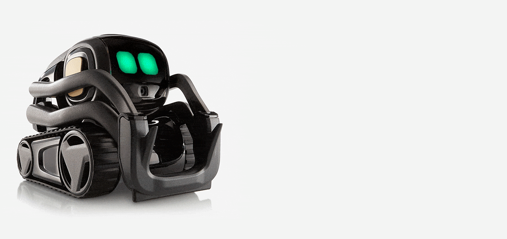

Fullscreen mode
Just press »F« on your keyboard to show your presentation in fullscreen mode. Press the »ESC« key to exit fullscreen mode.
Overview mode
Press "Esc" or "o" keys to toggle the overview mode on and off. While you're in this mode, you can still navigate between slides, as if you were at 1,000 feet above your presentation.
Machine Learning & AI
Lesson 2
Author: Egoshkin Danila Igorevich
Topic N
 https://en.wikipedia.org/wiki/User:KnightDanila
https://en.wikipedia.org/wiki/User:KnightDanila
E:\Learn It\GAMES-Programming\Web-Programming\Audio\test
3 Base Logic Types
Crisp - Classical logic (two-valued, boolean or bivalent logic)
{ TRUE | FALSE }Many-valued logic - Non-Classical logic
{ TRUE | FALSE | WHOKNOWS | ... } $$ ClassicalLogic \subset ManyValuedLogic $$Fuzzy Logic - Non-Classical logic
$$ FuzzyLogic \subset ManyValuedLogic $$ "Fuzzy Logic" have a friend as "Probability logic"Classic (Crisp) logic:
When \(a \ne 0\), there are two solutions to \(ax^2 + bx + c = 0\) and they are $$x = {-b \pm \sqrt{b^2-4ac} \over 2a}.$$Crisp vs Fuzzy Logic
What is Ordered vs Unordered set?
[], (). {}, <>Is it Ordered or Unordered set?
{1,2,3,4,5}{A,B,C,D,E}
{Skateboard,Velocycle,Horce,Car,Ship,Boat,RocketJack}
Is it Ordered or Unordered set?
(1,2,3,4,5)
(A,B,C,D,E)
(Skateboard,Velocycle,Horce,Car,Ship,Boat,RocketJack)
Ordered vs Unordered set
{} - unordered { . , ... , . }() - ordered ( . , ... , . )
<> - ordered < . , ... , . >
Crisp vs Fuzzy Logic
What is Crisp Unordered set?
Set: {Water, Milk, Coca-Cola, Orange Juice, Salt-Water}Set: {it is liquid}
What is the result Set?
Crisp vs Fuzzy Logic
What is Crisp Unordered set?
Set: {Water, Milk, Coca-Cola, Orange Juice, Salt-Water}Set: {it is liquid}
Result:
{Water, Milk, Coca-Cola, Orange Juice, Salt-Water}
Crisp vs Fuzzy Logic
What is Crisp Unordered set?
Set: {Water, Milk, Coca-Cola, Orange Juice, Salt-Water}Set: {it quenches your thirst} - "це вгамує спрагу"
What is the result Set?
Crisp vs Fuzzy Logic
What is Crisp Unordered set?
Set: {Water, Milk, Coca-Cola, Orange Juice, Salt-Water}Set: {it quenches your thirst} - "це вгамує спрагу"
Result:
{Water, Milk}
Crisp vs Fuzzy Logic
What is Crisp Unordered set?
Result: { $$Water | Water \in A, Milk | Milk \in A,$$ $$Coca-Cola | Coca-Cola \notin A,$$ $$Orange Juice | Orange Juice \notin A,$$ $$Salt-Water | Salt-Water \notin A$$ }Crisp vs Fuzzy Logic
What is Fuzzy Unordered set of Ordered pairs?
Set X: {Water, Milk, Coca-Cola, Orange Juice, Salt-Water}tea
Set A: {it is liquid}
What is the result Set?
Set A: {it is liquid}
Result:
{ $$(Water, \mu_A(Water)=1) | Water \in X), $$ $$(Milk, \mu_A(Milk)=0.95) | Milk \in X), $$ $$(Coca-Cola, \mu_A(Coca-Cola)=0.90) | Coca-Cola \in X) $$ $$(Orange Juice, \mu_A(Orange Juice)=0.90) | Orange Juice \in X) $$ $$(Salt-Water, \mu_A(Salt-Water)=0.95) | Salt-Water \in X) $$ }
Crisp vs Fuzzy Logic
What is Fuzzy Unordered set of Ordered pairs?
Set X: {Water, Milk, Coca-Cola, Orange Juice, Salt-Water}Set A: {it quenches your thirst} - "це вгамує спрагу"
What is the result Set?
Set A: {it quenches your thirst} - "це вгамує спрагу"
Result:
{ $$(Water, \mu_A(Water)=1) | Water \in X), $$ $$(Milk, \mu_A(Milk)=0.90) | Milk \in X), $$ $$(Coca-Cola, \mu_A(Coca-Cola)=0.75) | Coca-Cola \in X) $$ $$(Orange Juice, \mu_A(Orange Juice)=0.75) | Orange Juice \in X) $$ $$(Salt-Water, \mu_A(Salt-Water)=0) | Salt-Water \in X) $$ }
Classic (Crisp) logic:
When \(a \ne 0\), there are two solutions to \(ax^2 + bx + c = 0\) and they are $$x = {-b \pm \sqrt{b^2-4ac} \over 2a}.$$List
1. Elem
2. Elem
3. ElemMark
Code
// define the function's prototype
typedef void (*GL_GENBUFFERS) (GLsizei, GLuint*);
// find the function and assign it to a function pointer
GL_GENBUFFERS glGenBuffers = (GL_GENBUFFERS)wglGetProcAddress("glGenBuffers");
// function can now be called as normal
unsigned int buffer;
glGenBuffers(1, &buffer);
Links:
Crisp and Fuzzy:
- Ordered or Unordered set - https://www.youtube.com/watch?v=xddKAVNzmKg
- Crisp and Fuzzy - https://www.youtube.com/watch?v=orncleSZYwc
- Crisp and Fuzzy - https://www.geeksforgeeks.org/difference-between-crisp-set-and-fuzzy-set/
- Crisp (Classic) Logic - https://en.wikipedia.org/wiki/Principle_of_bivalence
- Fuzzy vs Many Valued Logic - https://en.wikipedia.org/wiki/Many-valued_logic
- Fuzzy - https://en.wikipedia.org/wiki/Fuzzy_logic